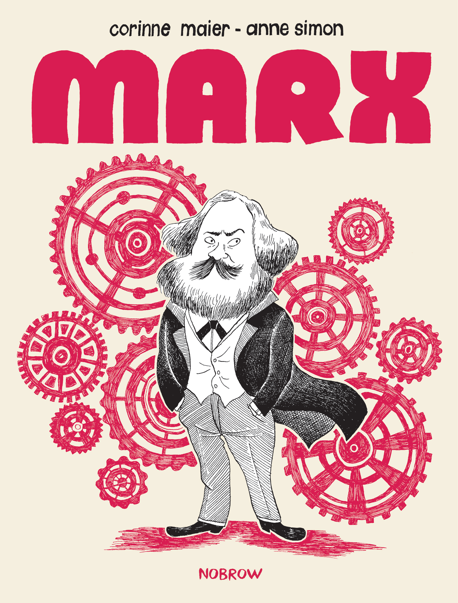
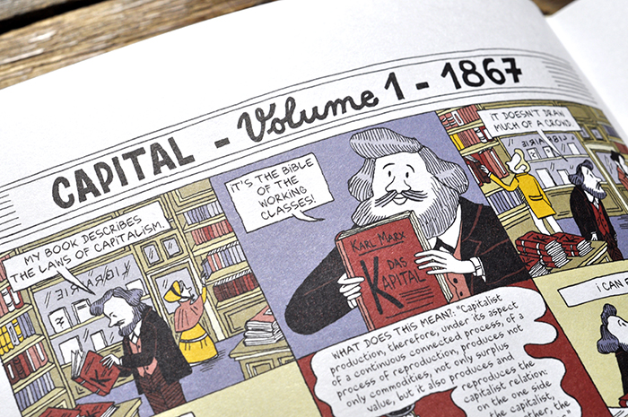
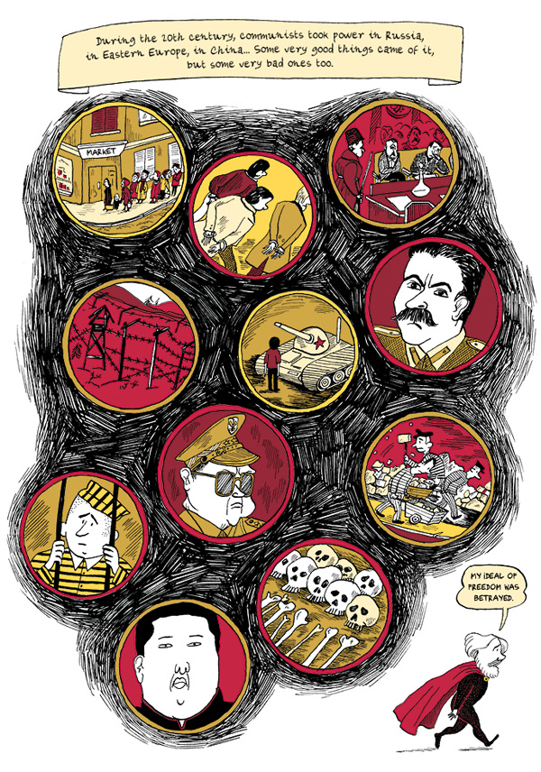
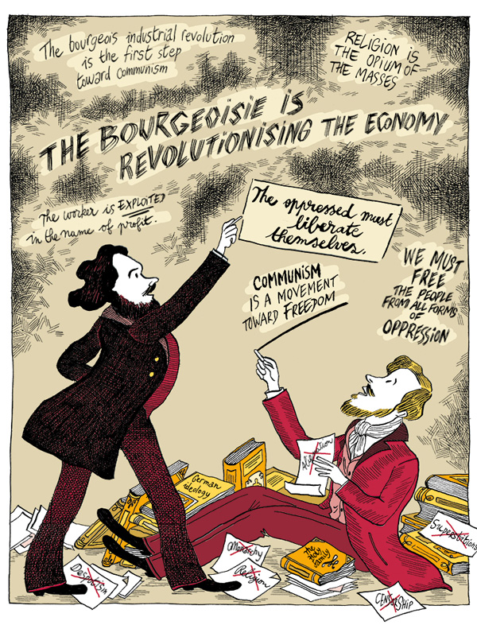

¡Trabajadores del mundo, únanse!
Una de las figuras más influyentes en la historia, cuyo nombre todos los estudiantes de economía y filosofía identifican; más conocido como un comunista revolucionario que como un filósofo, y de quien sus obras inspiraron a muchos de los gobiernos revolucionarios del siglo XX: Karl Marx, el hombre que “soñó un mundo libre de explotación, inequidad y desempleo”, y cuya biografía gráfica nos presenta la editorial británica Nobrow.

Fuente: Nobrow
La biografía nos lleva a recorrer los sucesos relevantes y las inquietudes personales de Marx, mostrando sus influencias tempranas, su elección de carrera, sus conflictos internos y sus momentos de confusión, explicando con simplicidad conceptos como capitalismo, relaciones de trabajo, economía y comunismo.

Fuente: Nobrow
El cómic logra humanizar la figura de Marx, sin referirse a él como un héroe ni como un villano. Entre las reflexiones sobre cómo las ideas de Marx dieron pie al ascenso del comunismo en Rusia, Europa del Este y China durante el siglo XX, se menciona que “algunas cosas muy buenas salieron de ellas, pero algunas muy malas, también”.

Fuente: Brain Pickings
Este libro es una gran introducción a la vida y obra de Marx que, gracias a la bondad del formato, evita en gran medida las dificultades de los textos históricos, tales como el Manifiesto del Partido Comunista o El Capital, y se queda con lo mínimo esencial para presentarnos a la persona.

Fuente: Brain Pickings
“Mi nombre es Karl Marx. Una vez me apodaron el Diablo por denunciar el capitalismo. Pero, antes de juzgarme, permíteme contarte mi historia…”
Este texto apareció primero en Comicgram.